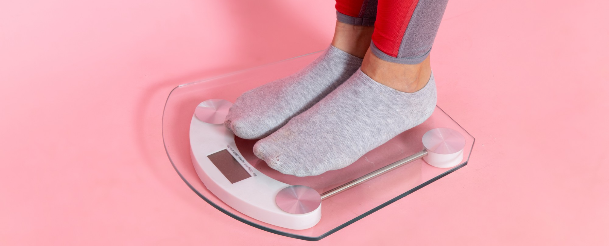

Bulimia Nervosa

What is Bulimia Nervosa?
Bulimia Nervosa is a serious mental health disorder characterized by
cycles of binge eating followed by behaviors intended to prevent
weight gain, such as self-induced vomiting, excessive exercise, or the
misuse of laxatives or diuretics. People with bulimia often feel a
loss of control during binges and immense guilt afterward, leading to
dangerous compensatory behaviors. This disorder is not just about food
or weight—it is a complex condition often rooted in emotional and
psychological challenges and frequently coexists with other mental
health conditions like anxiety, depression, or substance abuse. Early
diagnosis and intervention are essential for recovery due to the
potential for severe physical and psychological complications.
Symptoms of Bulimia Nervosa
People with bulimia may go to great lengths to hide their symptoms and
behaviors. Here are some common signs and symptoms:
-
• Extreme Weight Loss: Significant reduction in body weight
that is much lower than what is considered healthy for one’s age and
height.
-
• Frequent Episodes of Binge Eating: Consuming unusually large
amounts of food within a short time period, often in secret.
-
• Compensatory Behaviors: Regular use of vomiting, fasting,
laxatives, diuretics, or excessive exercise to prevent weight gain.
-
• Distorted Body Image: Persistent concern or dissatisfaction
with body shape and weight.
-
• Fear of Weight Gain: Intense worry about gaining weight,
often despite being of a healthy or low weight.
-
• Obsessive Focus on Food and Weight: Constant preoccupation
with thoughts of food, dieting, and calorie control.
-
• Swollen cheeks, damaged teeth from stomach acid, calluses on
hands (from inducing vomiting), dehydration, fatigue, and irregular
menstrual cycles in females.
Causes of Bulimia Nervosa
Bulimia nervosa has no single cause but often arises from a
combination of biological, psychological, and environmental factors:
-
• Genetic Factors: A family history of eating disorders or
mental health conditions may increase susceptibility.
-
• Psychological Factors: Low self-esteem, perfectionism,
impulsivity, and a strong desire for control can contribute to
bulimic behaviors.
-
• Environmental and Social Influences: Societal ideals that
equate thinness with beauty or success can drive individuals to
unhealthy weight-control practices.
-
• Cultural Pressures: Cultural environments that emphasize
body image and thinness can increase the likelihood of developing
bulimia.
Health Consequences of Bulimia Nervosa
The recurrent binge-purge cycles in bulimia can lead to serious health
issues, including:
-
• Electrolyte Imbalance: Loss of electrolytes due to vomiting
or laxative use can lead to heart arrhythmias, cardiac arrest, or
sudden death.
-
• Digestive Issues: Severe acid reflux, chronic sore throat,
and inflammation of the esophagus.
-
• Tooth Erosion and Gum Disease: Stomach acid from vomiting
damages the teeth and gums.
-
• Gastrointestinal Damage: Binge eating and purging can cause
bloating, constipation, and severe abdominal pain.
-
• Hormonal and Menstrual Irregularities: Hormonal imbalances
may cause missed or irregular menstrual cycles in females.
-
• Kidney Problems: Frequent dehydration from purging can lead
to kidney damage and, in severe cases, kidney failure.
Treatment and Recovery
Supporting someone with bulimia nervosa requires empathy, patience,
and a non-judgmental approach. Here’s how you can help:
-
• Encourage them to seek professional help: Gently suggest
they consider professional support, emphasizing that recovery is
possible with help.
-
• Listen and offer emotional support: Be a source of comfort
without focusing on food or appearance, as this can exacerbate
feelings of guilt or shame.
-
• Educate yourself: Learning about bulimia can help you
understand their challenges and provide more effective support.
-
• Avoid comments on weight or appearance: Instead, focus on
their health and emotional well-being.
How to Support Someone with Anorexia Nervosa
If you have a friend or family member struggling with anorexia
nervosa, it is important to approach them with compassion and
understanding. Here’s how you can help:
-
• Encourage them to seek professional help: Let them know you
care about their well-being and that eating disorders are serious
but treatable.
-
• Be patient and non-judgmental: Understand that recovery can
take time and setbacks may occur.
-
• Educate yourself: Learning more about anorexia can help you
provide better support and remove any misconceptions.
-
• Avoid making comments about appearance: Focus on their
health and emotional well-being rather than their weight or looks.